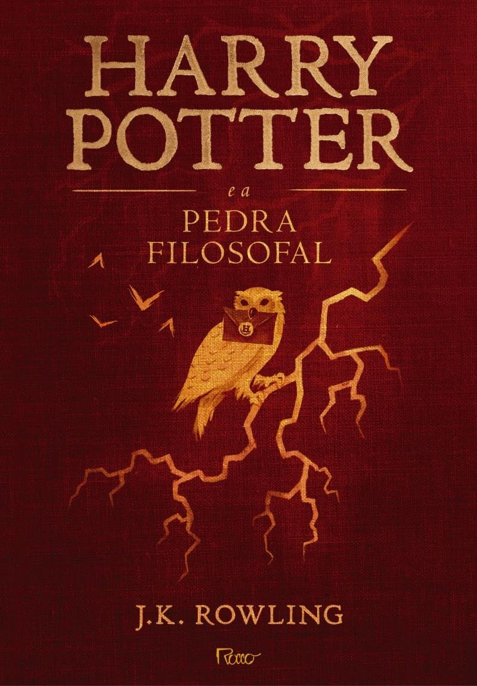

Informações
Reservar
Nome do livro:
Harry Potter e a Pedra Filosofal
Editora:
Rocco
Sinopse:
Harry Potter é um garoto cujos pais, feiticeiros, foram assassinados por um poderosíssimo bruxo quando ele ainda era um bebê. Ele foi levado, então, para a casa dos tios que nada tinham a ver com o sobrenatural. Pelo contrário. Até os 10 anos, Harry foi uma espécie de gata borralheira: maltratado pelos tios, herdava roupas velhas do primo gorducho, tinha óculos remendados e era tratado como um estorvo. No dia de seu aniversário de 11 anos, entretanto, ele parece deslizar por um buraco sem fundo, como o de Alice no país das maravilhas, que o conduz a um mundo mágico. Descobre sua verdadeira história e seu destino: ser um aprendiz de feiticeiro até o dia em que terá que enfrentar a pior força do mal, o homem que assassinou seus pais. O menino de olhos verde, magricela e desengonçado, tão habituado à rejeição, descobre, também, que é um herói no universo dos magos. Potter fica sabendo que é a única pessoa a ter sobrevivido a um ataque do tal bruxo do mal e essa é a causa da marca em forma de raio que ele carrega na testa. Ele não é um garoto qualquer, ele sequer é um feiticeiro qualquer ele é Harry Potter, símbolo de poder, resistência e um líder natural entre os sobrenaturais. A fábula, recheada de fantasmas, paredes que falam, caldeirões, sapos, unicórnios, dragões e gigantes, não é, entretanto, apenas um passatempo